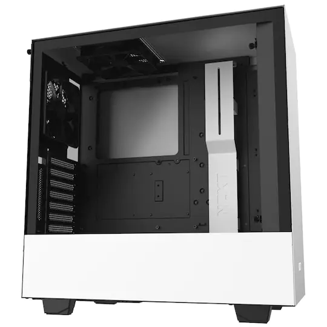

| Olika chassin | Top Chassi |
|---|---|
| Fractal | Nr:1 |
| Corsair | Nr:2 |
| Lian li | Nr:5 |
| be Quiet | Nr:3 |
| DeepCool | Nr:4 |
En dators chassi beskrivs bäst som dess kropp, det vill säga dess hölje. Ett datorchassi kapslar in samtliga delar datorn består av. Det finns en stor mängd olika chassin på marknaden och vissa är bättre lämpade för vissa typer av datorer. Har man till exempel en dator avsedd att spela de senaste spelen på är det nödvändigt att chassit har bra ventilation i form av fläktar och utrymme för att inte komponenterna i datorn ska bli för varma. Används datorn istället endast för ordbehandling klarar man sig med både ett mindre och sämre ventilerat (och därigenom också oftare tystare) chassi. Olika chassin klarar också av olika typer av moderkortsstorlekar, olika mängder hårddiskar (för lagring) och olika mängder expansionskort (till exempel grafikkort). Det är därför väldigt viktigt att man vid val av datorchassi också funderar kring vad datorn kommer att användas till och vilka komponenter man vill använda sig av.
